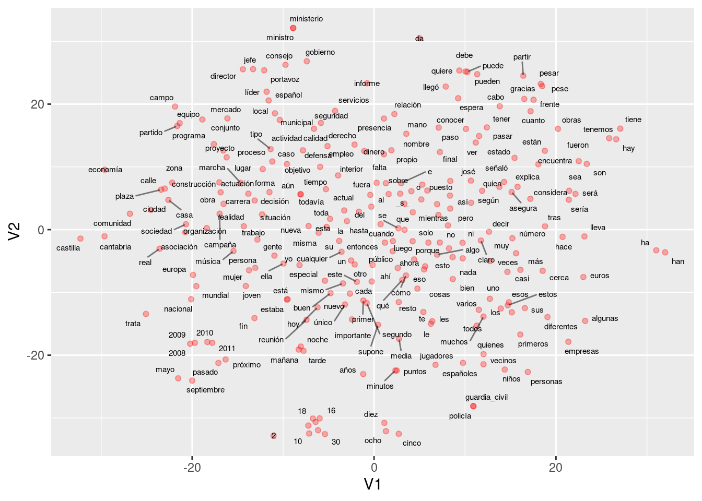

10 Representación de palabras y word2vec
En esta parte empezamos a ver los enfoques más modernos (redes neuronales) para construir modelos de lenguajes y resolver tareas de NLP. Se trata de modelos de lenguaje que incluyen más estructura, son más fáciles de regularizar y de ampliar si es necesario para incluir dependencias de mayor distancia. El método de conteo/suavizamiento de ngramas es simple y funciona bien para algunas tareas, pero podemos construir mejores modelos con enfoques más estructurados, y con más capacidad para aprender aspectos más complejos del lenguaje natural.
Si \(w=w_1w_2\cdots w_N\) es una frase, y las \(w\) representan palabras, recordemos que un modelo de lenguaje con dependencia de \(n\)-gramas consiste de las probabilidades
\[P(w_t | w_{t-1} w_{t-2} \cdots w_{t-n+1}),\]
(n=2, bigramas, n=3 trigramas, etc.)
Y vimos que tenemos problemas cuando observamos sucesiones que no vimos en el corpus de entrenamiento. Este problema se puede “parchar” utilizando técnicas de suavizamiento. Aún para colecciones de entrenamiento muy grandes tenemos que lidiar con este problema.
Podemos tomar un enfoque más estructurado pensando en representaciones “distribucionales” de palabras:
- Asociamos a cada palabra en el vocabulario un vector numérico con \(d\) dimensiones, que es su representación distribuida.
- Expresamos la función de probabilidad como combinaciones de las representaciones vectoriales del primer paso.
- Aprendemos (máxima verosimiltud posiblemente regularización) simultáneamente los vectores y la manera de combinar estos vectores para producir probabilidades.
La idea de este modelo es entonces subsanar la relativa escasez de datos (comparado con todos los trigramas que pueden existir) con estructura. Sabemos que esta es una buena estrategia si la estrucutura impuesta es apropiada.
El objeto es entonces abstraer características de palabras (mediante estas representaciones) intentando no perder mucho de su sentido original, lo que nos permite conocer palabras por su contexto, aún cuando no las hayamos observado antes.
Ejemplo
¿Cómo puede funcionar este enfoque? Por ejemplo, si vemos la frase “El gato corre en el jardín,” sabemos que una frase probable debe ser también “El perro corre en el jardín,” pero quizá nunca vimos en el corpus la sucesión “El perro corre.” La idea es que como “perro” y “gato” son funcionalmente similares (aparecen en contextos similares en otros tipos de oraciones como el perro come, el gato come, el perro duerme, este es mi gato, etc.), un modelo como el de arriba daría vectores similares a “perro” y “gato,” pues aparecen en contextos similares. Entonces el modelo daría una probabilidad alta a “El perro corre en el jardín.”
10.1 Modelo de red neuronal
Podemos entonces construir una red neuronal con 2 capas ocultas como sigue (segimos (Bengio et al. 2003), una de las primeras referencias en usar este enfoque). Usemos el ejemplo de trigramas:
- Capa de incrustación o embedding. En la primera capa oculta, tenemos un mapeo de las entradas \(w_1,\ldots, w_{n-1}\) a \(x=C(w_1),\ldots, C(w_{n-1})\), donde \(C\) es una función que mapea palabras a vectores de dimensión \(d\). \(C\) también se puede pensar como una matriz de dimensión \(|V|\) por \(d\). En la capa de entrada,
\[w_{n-2},w_{n-1} \to x = (C(w_{n-2}), C(w_{n-1})).\]
- Capa totalmente conexa. En la siguiente capa oculta tenemos una matriz de pesos \(H\) y la función logística (o tangente hiperbólica) \(\sigma (z) = \frac{e^z}{1+e^z}\), como en una red neuronal usual.
En esta capa calculamos \[z = \sigma (a + Hx),\] que resulta en un vector de tamaño \(h\).
- La capa de salida debe ser un vector de probabilidades sobre todo el vocabulario \(|V|\). En esta capa tenemos pesos \(U\) y hacemos \[y = b + U\sigma (z),\] y finalmente usamos softmax para tener probabilidades que suman uno: \[p_i = \frac{\exp (y_i) }{\sum_j exp(y_j)}.\]
En el ajuste maximizamos la verosimilitud:
\[\sum_t \log \hat{P}(w_{t,n}|w_{t,n-2}w_{t-n-1}) \]
La representación en la referencia (Bengio et al. 2003) es:

Imagen
Esta idea original ha sido explotada con éxito, aunque sigue siendo intensivo en cómputo ajustar un modelo como este. Nótese que el número de parámetros es del orden de \(|V|(nm+h)\), donde \(|V|\) es el tamaño del vocabulario (decenas o cientos de miles), \(n\) es 3 o 4 (trigramas, 4-gramas), \(m\) es el tamaño de la representacion (cientos) y \(h\) es el número de nodos en la segunda capa (también cientos o miles). Esto resulta en el mejor de los casos en modelos con miles de millones de parámetros. Adicionalmente, hay algunos cálculos costosos, como el softmax (donde hay que hacer una suma sobre el vocabulario completo). En el paper original se propone descenso estocástico.
Ejemplo
Veamos un ejemplo chico de cómo se vería el paso feed-forward de esta red. Supondremos en este ejemplo que los sesgos \(a,b\) son iguales a cero para simplificar los cálculos.
Consideremos que el texto de entrenamiento es “El perro corre. El gato corre. El león corre. El león ruge.”
En este caso, nuestro vocabulario consiste de los 8 tokens \(<s>\), el, perro, gato, león, corre, caza \(</s>\). Consideremos un modelo con \(d=2\) (representaciones de palabras en 2 dimensiones), y consideramos un modelo de trigramas.
Nuestra primera capa es una matriz \(C\) de tamaño \(2\times 8\), es decir, un vector de tamaño 2 para cada palabra. Por ejemplo, podríamos tener
library(tidyverse)
set.seed(63)
C <- round(matrix(rnorm(16, 0, 0.1), 2, 8), 2)
colnames(C) <- c("_s_", "el", "perro", "gato", "león", "corre", "caza", "_ss_")
rownames(C) <- c("d_1", "d_2")
C## _s_ el perro gato león corre caza _ss_
## d_1 0.13 0.05 0.05 0.04 -0.17 0.04 0.03 -0.02
## d_2 -0.19 -0.19 -0.11 0.01 0.04 -0.01 0.02 0.02En la siguiente capa consideremos que usaremos, arbitrariamente, \(h=3\) unidades. Como estamos considerando bigramas, necesitamos una entrada de tamaño 4 (representación de un bigrama, que son dos vectores de la matriz \(C\), para predecir la siguiente palabra).
H <- round(matrix(rnorm(12, 0, 0.1), 3, 4), 2)
H## [,1] [,2] [,3] [,4]
## [1,] -0.04 0.12 -0.09 0.18
## [2,] 0.09 0.10 0.06 0.08
## [3,] 0.10 -0.08 -0.07 -0.13Y la última capa es la del vocabulario. Son entonces 8 unidades, con 3 entradas cada una. La matriz de pesos es:
U <- round(matrix(rnorm(24, 0, 0.1), 8, 3), 2)
rownames(U) <- c("_s_", "el", "perro", "gato", "león", "corre", "caza", "_ss_")
U## [,1] [,2] [,3]
## _s_ 0.05 -0.15 -0.30
## el 0.01 0.16 0.15
## perro -0.14 0.10 0.05
## gato 0.04 0.09 0.12
## león 0.06 -0.03 0.02
## corre -0.01 0.00 -0.02
## caza 0.10 0.00 0.06
## _ss_ 0.07 -0.10 0.01Ahora consideremos cómo se calcula el objetivo con los datos de entrenamiento. El primer trigrama es (_s_, el). La primera capa entonces devuelve los dos vectores correspondientes a cada palabra (concatenado):
capa_1 <- c(C[, "_s_"], C[, "el"])
capa_1## d_1 d_2 d_1 d_2
## 0.13 -0.19 0.05 -0.19La siguiente capa es:
sigma <- function(z){ 1 / (1 + exp(-z))}
capa_2 <- sigma(H %*% capa_1)
capa_2## [,1]
## [1,] 0.4833312
## [2,] 0.4951252
## [3,] 0.5123475Y la capa final da
y <- U %*% capa_2
y## [,1]
## _s_ -0.203806461
## el 0.160905460
## perro 0.007463525
## gato 0.125376210
## león 0.024393066
## corre -0.015080262
## caza 0.079073967
## _ss_ -0.010555858Y aplicamos softmax para encontrar las probabilidades
p <- exp(y)/sum(exp(y)) |> as.numeric()
p## [,1]
## _s_ 0.09931122
## el 0.14301799
## perro 0.12267376
## gato 0.13802588
## león 0.12476825
## corre 0.11993917
## caza 0.13178067
## _ss_ 0.12048306Y la probabilidad es entonces
p_1 <- p["perro", 1]
p_1## perro
## 0.1226738Cuya log probabilidad es
log(p_1)## perro
## -2.098227Ahora seguimos con el siguiente trigrama, que es “(perro, corre).” Necesitamos calcular la probabilidad de corre dado el contexto “el perro.” Repetimos nuestro cálculo:
capa_1 <- c(C[, "el"], C[, "perro"])
capa_1## d_1 d_2 d_1 d_2
## 0.05 -0.19 0.05 -0.11capa_2 <- sigma(H %*% capa_1)
capa_2## [,1]
## [1,] 0.4877275
## [2,] 0.4949252
## [3,] 0.5077494y <- U %*% capa_2
y## [,1]
## _s_ -0.202177217
## el 0.160227709
## perro 0.006598141
## gato 0.124982290
## león 0.024570880
## corre -0.015032262
## caza 0.079237709
## _ss_ -0.010274101p <- exp(y)/sum(exp(y)) |> as.numeric()
p## [,1]
## _s_ 0.09947434
## el 0.14292280
## perro 0.12256912
## gato 0.13797317
## león 0.12479193
## corre 0.11994636
## caza 0.13180383
## _ss_ 0.12051845Y la probabilidad es entonces
p_2 <- p["corre", 1]
log(p_2)## corre
## -2.120711Sumando, la log probabilidad es:
log(p_1) + log(p_2)## perro
## -4.218937y continuamos con los siguientes trigramas del texto de entrenamiento. Creamos una función
feed_fow_p <- function(trigrama, C, H, U){
trigrama <- strsplit(trigrama, " ", fixed = TRUE)[[1]]
capa_1 <- c(C[, trigrama[1]], C[, trigrama[2]])
capa_2 <- sigma(H %*% capa_1)
y <- U %*% capa_2
p <- exp(y)/sum(exp(y)) |> as.numeric()
p
}
feed_fow_dev <- function(trigrama, C, H, U) {
p <- feed_fow_p(trigrama, C, H, U)
trigrama_s <- strsplit(trigrama, " ", fixed = TRUE)[[1]]
log(p)[trigrama_s[3], 1]
}Y ahora aplicamos a todos los textos:
texto_entrena <- c("_s_ el perro corre _ss_", " _s_ el gato corre _ss_", " _s_ el león corre _ss_",
"_s_ el león caza _ss_", "_s_ el gato caza _ss_")
entrena_trigramas <- map(texto_entrena,
~tokenizers::tokenize_ngrams(.x, n = 3)[[1]]) |>
flatten() |> unlist()
entrena_trigramas## [1] "_s_ el perro" "el perro corre" "perro corre _ss_" "_s_ el gato"
## [5] "el gato corre" "gato corre _ss_" "_s_ el león" "el león corre"
## [9] "león corre _ss_" "_s_ el león" "el león caza" "león caza _ss_"
## [13] "_s_ el gato" "el gato caza" "gato caza _ss_"log_p <- sapply(entrena_trigramas, function(x) feed_fow_dev(x, C, H, U))
sum(log_p)## [1] -31.21475Ahora piensa como harías más grande esta verosimilitud. Observa que “perro,” “gato” y “león”” están comunmente seguidos de “corre.” Esto implica que nos convendría que hubiera cierta similitud entre los vectores de estas tres palabras, por ejemplo:
C_1 <- C
indices <- colnames(C) %in% c("perro", "gato", "león")
C_1[1, indices] <- 3.0
C_1[1, !indices] <- -1.0
C_1## _s_ el perro gato león corre caza _ss_
## d_1 -1.00 -1.00 3.00 3.00 3.00 -1.00 -1.00 -1.00
## d_2 -0.19 -0.19 -0.11 0.01 0.04 -0.01 0.02 0.02La siguiente capa queremos que extraiga el concepto “animal” en la palabra anterior, o algo similar, así que podríamos poner en la unidad 1:
H_1 <- H
H_1[1, ] <- c(0, 0, 5, 0)
H_1## [,1] [,2] [,3] [,4]
## [1,] 0.00 0.00 5.00 0.00
## [2,] 0.09 0.10 0.06 0.08
## [3,] 0.10 -0.08 -0.07 -0.13Nótese que la unidad 1 de la segunda capa se activa cuando la primera componente de la palabra anterior es alta. En la última capa, podríamos entonces poner
U_1 <- U
U_1["corre", ] <- c(4.0, -2, -2)
U_1["caza", ] <- c(4.2, -2, -2)
U_1## [,1] [,2] [,3]
## _s_ 0.05 -0.15 -0.30
## el 0.01 0.16 0.15
## perro -0.14 0.10 0.05
## gato 0.04 0.09 0.12
## león 0.06 -0.03 0.02
## corre 4.00 -2.00 -2.00
## caza 4.20 -2.00 -2.00
## _ss_ 0.07 -0.10 0.01que captura cuando la primera unidad se activa. Ahora el cálculo completo es:
log_p <- sapply(entrena_trigramas, function(x) feed_fow_dev(x, C_1, H_1, U_1))
sum(log_p)## [1] -23.53883Y logramos aumentar la verosimilitud considerablemente. Compara las probabilidades:
feed_fow_p("el perro", C, H, U)## [,1]
## _s_ 0.09947434
## el 0.14292280
## perro 0.12256912
## gato 0.13797317
## león 0.12479193
## corre 0.11994636
## caza 0.13180383
## _ss_ 0.12051845feed_fow_p("el perro", C_1, H_1, U_1)## [,1]
## _s_ 0.03493901
## el 0.04780222
## perro 0.03821035
## gato 0.04690264
## león 0.04308502
## corre 0.33639351
## caza 0.41087194
## _ss_ 0.04179531feed_fow_p("el gato", C, H, U)## [,1]
## _s_ 0.09957218
## el 0.14289131
## perro 0.12246787
## gato 0.13795972
## león 0.12480659
## corre 0.11993921
## caza 0.13183822
## _ss_ 0.12052489feed_fow_p("el gato", C_1, H_1, U_1)## [,1]
## _s_ 0.03489252
## el 0.04769205
## perro 0.03813136
## gato 0.04679205
## león 0.04298749
## corre 0.33663831
## caza 0.41117094
## _ss_ 0.04169529Observación: a partir de este principio, es posible construir arquitecturas más refinadas que tomen en cuenta, por ejemplo, relaciones más lejanas entre partes de oraciones (no solo el contexto del n-grama), ver por ejemplo el capítulo 10 del libro de Deep Learning de Goodfellow, Bengio y Courville.
Abajo exploramos una parte fundamental de estos modelos: representaciones de palabras, y modelos relativamente simples para obtener estas representaciones.
10.2 Representación de palabras
Un aspecto interesante de el modelo de arriba es que nos da una representación vectorial de las palabras, en la forma de los parámetros ajustados de la matriz \(C\). Esta se puede entender como una descripción numérica de cómo funciona una palabra en el contexto de su n-grama.
Por ejemplo, deberíamos encontrar que palabras como “perro” y “gato” tienen representaciones similares. La razón es que cuando aparecen, las probabilidades sobre las palabras siguientes deberían ser similares, pues estas son dos palabras que se pueden usar en muchos contextos compartidos.
También podríamos encontrar que palabras como perro, gato, águila, león, etc. tienen partes o entradas similares en sus vectores de representación, que es la parte que hace que funcionen como “animal mamífero” dentro de frases.
Veremos que hay más razones por las que es interesante esta representación.
10.3 Modelos de word2vec
Si lo que principalmente nos interesa es obtener la representación vectorial de palabras, más recientemente se descubrió que es posible simplificar considerablemente el modelo de arriba para poder entrenarlo mucho más rápido, y obtener una representación que en muchas tareas se desempeña bien ((Mikolov et al. 2013)).
Hay dos ideas básicas que se pueden usar para reducir la complejidad del entrenamiento (ver más en (Goodfellow, Bengio, and Courville 2016) y (Mikolov et al. 2013):
- Eliminar la segunda capa oculta: modelo de bag-of-words continuo y modelo de skip-gram.
- Cambiar la función objetivo (minimizar devianza/maximizar verosimilitud) por una más simple, mediante un truco que se llama negative sampling.
Como ya no es de interés central predecir la siguiente palabra a partir de las anteriores, en estos modelos intentamos predecir la palabra central a partir de las que están alrededor.
Arquitectura continuous bag-of-words
La entrada es igual que en el modelo completo. En primer lugar, simplificamos la segunda capa oculta pondiendo en \(z\) el promedio de los vectores \(C(w_{n-2}), C(w_{n-1})\). La última capa la dejamos igual por el momento:

Imagen
El modelo se llama bag-of-words porque todas las entradas de la primera capa oculta contribuyen de la misma manera en la salida, independientemente del orden. Aunque esto no suena como buena idea para construir un modelo de lenguaje, veremos que resulta en una representación adecuada para algunos problemas.
- En la primera capa oculta, tenemos un mapeo de las entradas \(w_1,\ldots, w_{n-1}\) a \(x=C(w_1),\ldots, C(w_{n-1})\), donde \(C\) es una función que mapea palabras a vectores de dimensión \(d\). \(C\) también se puede pensar como una matriz de dimensión \(|V|\) por \(d\). En la capa de entrada,
\[w_{n-2},w_{n-1} \to x = (C(w_{n-2}), C(w_{n-1})).\]
En la siguiente “capa” oculta simplemente sumamos las entradas de \(x\). Aquí nótese que realmente no hay parámetros.
Finalmente, la capa de salida debe ser un vector de probabilidades sobre todo el vocabulario \(|V|\). En esta capa tenemos pesos \(U\) y hacemos \[y = b + U\sigma (z),\] y finalmente usamos softmax para tener probabilidades que suman uno: \[p_i = \frac{\exp (y_i) }{\sum_j exp(y_j)}.\]
En el ajuste maximizamos la verosimilitud sobre el corpus. Por ejemplo, para una frase, su log verosimilitud es:
\[\sum_t \log \hat{P}(w_{t,n}|w_{t,n+1} \cdots w_{t-n-1}) \]
Arquitectura skip-grams
Otro modelo simplificado, con más complejidad computacional pero mejores resultados (ver (Mikolov et al. 2013)) que el bag-of-words, es el modelo de skip-grams. En este caso, dada cada palabra que encontramos, intentamos predecir un número fijo de las palabras anteriores y palabras posteriores (el contexto es una vecindad de la palabra).

Imagen
La función objetivo se defina ahora (simplificando) como suma sobre \(t\):
\[-\sum_t \sum_{ -2\leq j \leq 2, j\neq 0} \log P(w_{t-j} | w_t)\] (no tomamos en cuenta dónde aparece exactamente \(w_{t-j}\) en relación a \(w_t\), simplemente consideramos que está en su contexto), donde
\[\log P(w_{t-j}|w_t) = u_{t-j}^tC(w_t) - \log\sum_k \exp{u_{k}^tC(w_t)}\]
Todavía se propone una simplificación adicional que resulta ser efectiva:
Muestreo negativo
La siguiente simplificación consiste en cambiar la función objetivo. En word2vec puede usarse “muestreo negativo.”
Para empezar, la función objetivo original (para contexto de una sola palabra) es
\[E = -\log \hat{P}(w_{a}|w_{n}) = -y_{w_a} + \log\sum_j \exp(y_j),\]
donde las \(y_i\) son las salidas de la penúltima capa. La dificultad está en el segundo término, que es sobre todo el vocabulario en incluye todos los parámetros del modelo (hay que calcular las parciales de \(y_j\)’s sobre cada una de las palabras del vocabulario).
La idea del muestreo negativo es que si \(w_a\) está en el contexto de \(w_{n}\), tomamos una muestra de \(k\) palabras \(v_1,\ldots v_k\) al azar (2-50, dependiendo del tamaño de la colección), y creamos \(k\) “contextos falsos” \(v_j w_{n}\), \(j=1\ldots,k\). Minimizamos en lugar de la observación de arriba
\[E = -\log\sigma(y_{w_a}) + \sum_{j=1}^k \log\sigma(y_j),\] en donde queremos maximizar la probabilidad de que ocurra \(w_a\) vs. la probabilidad de que ocurra alguna de las \(v_j\). Es decir, solo buscamos optimizar parámetros para separar lo mejor que podamos la observación de \(k\) observaciones falsas, lo cual implica que tenemos que mover un número relativamente chico de parámetros (en lugar de todos los parámetros de todas las palabras del vocabulario).
Las palabras “falsas” se escogen según una probabilidad ajustada de unigramas (se observó empíricamente mejor desempeño cuando escogemos cada palabra con probabilidad proporcional a \(P(w)^{3/4}\), en lugar de \(P(w)\), ver (Mikolov et al. 2013)).
Ejemplo
if(!require(wordVectors)){
devtools::install_github("bmschmidt/wordVectors")
}## pillar (1.6.4 -> 1.7.0) [CRAN]
## magrittr (2.0.1 -> 2.0.3) [CRAN]
## fansi (0.5.0 -> 1.0.3) [CRAN]
## withr (2.4.3 -> 2.5.0) [CRAN]
## tidyselect (1.1.1 -> 1.1.2) [CRAN]
## vctrs (0.3.8 -> 0.4.1) [CRAN]
## tzdb (0.2.0 -> 0.3.0) [CRAN]
## tibble (3.1.6 -> 3.1.7) [CRAN]
## rlang (0.4.12 -> 1.0.2) [CRAN]
## glue (1.6.0 -> 1.6.2) [CRAN]
## cli (3.1.0 -> 3.3.0) [CRAN]
## crayon (1.4.2 -> 1.5.1) [CRAN]
## clipr (0.7.1 -> 0.8.0) [CRAN]
## readr (2.1.1 -> 2.1.2) [CRAN]
## * checking for file ‘/tmp/RtmpH4Bct7/remotes481028505762/bmschmidt-wordVectors-7f1914c/DESCRIPTION’ ... OK
## * preparing ‘wordVectors’:
## * checking DESCRIPTION meta-information ... OK
## * cleaning src
## * checking for LF line-endings in source and make files and shell scripts
## * checking for empty or unneeded directories
## * building ‘wordVectors_2.0.tar.gz’library(wordVectors)library(tidyverse)
ruta <- "../datos/noticias/ES_Newspapers.txt"
if(!file.exists(ruta)){
periodico <-
read_lines(file= "https://es-noticias.s3.amazonaws.com/Es_Newspapers.txt",
progress = FALSE)
write_lines(periodico, ruta)
} else {
periodico <- read_lines(file= ruta,
progress = FALSE)
}
normalizar <- function(texto, vocab = NULL){
# minúsculas
texto <- tolower(texto)
# varios ajustes
texto <- gsub("\\s+", " ", texto)
texto <- gsub("\\.[^0-9]", " _punto_ ", texto)
texto <- gsub(" _s_ $", "", texto)
texto <- gsub("\\.", " _punto_ ", texto)
texto <- gsub("[«»¡!¿?-]", "", texto)
texto <- gsub(";", " _punto_coma_ ", texto)
texto <- gsub("\\:", " _dos_puntos_ ", texto)
texto <- gsub("\\,[^0-9]", " _coma_ ", texto)
texto <- gsub("\\s+", " ", texto)
texto
}
periodico_df <- tibble(txt = periodico) |>
mutate(id = row_number()) |>
mutate(txt = normalizar(txt))Construimos un modelo con vectores de palabras de tamaño 100, skip-grams de tamaño 4, y ajustamos con muestreo negativo de tamaño 20:
if(!file.exists('./salidas/noticias_w2v.txt')){
tmp <- tempfile()
# tokenización
write_lines(periodico_df$txt, tmp)
prep <- prep_word2vec(tmp,
destination = './salidas/noticias_w2v.txt', bundle_ngrams = 2)
} ## Beginning tokenization to text file at ./salidas/noticias_w2v.txt## Prepping /tmp/RtmpH4Bct7/file48103cb35a2## Starting training using file ./salidas/noticias_w2v.txt
## Words processed: 100K Vocab size: 73K
Words processed: 200K Vocab size: 124K
Words processed: 300K Vocab size: 168K
Words processed: 400K Vocab size: 209K
Words processed: 500K Vocab size: 247K
Words processed: 600K Vocab size: 281K
Words processed: 700K Vocab size: 314K
Words processed: 800K Vocab size: 346K
Words processed: 900K Vocab size: 376K
Words processed: 1000K Vocab size: 406K
Words processed: 1100K Vocab size: 434K
Words processed: 1200K Vocab size: 462K
Words processed: 1300K Vocab size: 489K
Words processed: 1400K Vocab size: 515K
Words processed: 1500K Vocab size: 540K
Words processed: 1600K Vocab size: 565K
Words processed: 1700K Vocab size: 590K
Words processed: 1800K Vocab size: 613K
Words processed: 1900K Vocab size: 637K
Words processed: 2000K Vocab size: 661K
Words processed: 2100K Vocab size: 684K
Words processed: 2200K Vocab size: 706K
Words processed: 2300K Vocab size: 729K
Words processed: 2400K Vocab size: 750K
Words processed: 2500K Vocab size: 771K
Words processed: 2600K Vocab size: 792K
Words processed: 2700K Vocab size: 813K
Words processed: 2800K Vocab size: 834K
Words processed: 2900K Vocab size: 854K
Words processed: 3000K Vocab size: 873K
Words processed: 3100K Vocab size: 893K
Words processed: 3200K Vocab size: 913K
Words processed: 3300K Vocab size: 932K
Words processed: 3400K Vocab size: 951K
Words processed: 3500K Vocab size: 970K
Words processed: 3600K Vocab size: 989K
Words processed: 3700K Vocab size: 1007K
Words processed: 3800K Vocab size: 1026K
Words processed: 3900K Vocab size: 1044K
Words processed: 4000K Vocab size: 1062K
Words processed: 4100K Vocab size: 1080K
Words processed: 4200K Vocab size: 1098K
Words processed: 4300K Vocab size: 1115K
Words processed: 4400K Vocab size: 1132K
Words processed: 4500K Vocab size: 1150K
Words processed: 4600K Vocab size: 1167K
Words processed: 4700K Vocab size: 1184K
Words processed: 4800K Vocab size: 1201K
Words processed: 4900K Vocab size: 1218K
Words processed: 5000K Vocab size: 1235K
Words processed: 5100K Vocab size: 1252K
Words processed: 5200K Vocab size: 1268K
Words processed: 5300K Vocab size: 1285K
Words processed: 5400K Vocab size: 1301K
Words processed: 5500K Vocab size: 1317K
Words processed: 5600K Vocab size: 1333K
Words processed: 5700K Vocab size: 1349K
Words processed: 5800K Vocab size: 1364K
Words processed: 5900K Vocab size: 1380K
Words processed: 6000K Vocab size: 1395K
Words processed: 6100K Vocab size: 1411K
Words processed: 6200K Vocab size: 1426K
Words processed: 6300K Vocab size: 1441K
Words processed: 6400K Vocab size: 1456K
Words processed: 6500K Vocab size: 1471K
Words processed: 6600K Vocab size: 1486K
Words processed: 6700K Vocab size: 1501K
Words processed: 6800K Vocab size: 1516K
Words processed: 6900K Vocab size: 1530K
Words processed: 7000K Vocab size: 1545K
Words processed: 7100K Vocab size: 1560K
Words processed: 7200K Vocab size: 1575K
Words processed: 7300K Vocab size: 1589K
Words processed: 7400K Vocab size: 1604K
Words processed: 7500K Vocab size: 1618K
Words processed: 7600K Vocab size: 1632K
Words processed: 7700K Vocab size: 1646K
Words processed: 7800K Vocab size: 1661K
Words processed: 7900K Vocab size: 1675K
Words processed: 8000K Vocab size: 1689K
Words processed: 8100K Vocab size: 1703K
Words processed: 8200K Vocab size: 1717K
Words processed: 8300K Vocab size: 1731K
Words processed: 8400K Vocab size: 1744K
Words processed: 8500K Vocab size: 1758K
Words processed: 8600K Vocab size: 1771K
Words processed: 8700K Vocab size: 1785K
Words processed: 8800K Vocab size: 1798K
Words processed: 8900K Vocab size: 1812K
Words processed: 9000K Vocab size: 1825K
Words processed: 9100K Vocab size: 1839K
Words processed: 9200K Vocab size: 1852K
Words processed: 9300K Vocab size: 1865K
Words processed: 9400K Vocab size: 1878K
Words processed: 9500K Vocab size: 1892K
Words processed: 9600K Vocab size: 1905K
Words processed: 9700K Vocab size: 1918K
Words processed: 9800K Vocab size: 1931K
Words processed: 9900K Vocab size: 1943K
Words processed: 10000K Vocab size: 1956K
Words processed: 10100K Vocab size: 1969K
Words processed: 10200K Vocab size: 1982K
Words processed: 10300K Vocab size: 1995K
Words processed: 10400K Vocab size: 2008K
Words processed: 10500K Vocab size: 2020K
Words processed: 10600K Vocab size: 2033K
Words processed: 10700K Vocab size: 2045K
Words processed: 10800K Vocab size: 2057K
Words processed: 10900K Vocab size: 2070K
Words processed: 11000K Vocab size: 2082K
Words processed: 11100K Vocab size: 2094K
Words processed: 11200K Vocab size: 2107K
Words processed: 11300K Vocab size: 2119K
Words processed: 11400K Vocab size: 2131K
Words processed: 11500K Vocab size: 2143K
Words processed: 11600K Vocab size: 2156K
Words processed: 11700K Vocab size: 2168K
Words processed: 11800K Vocab size: 2180K
Words processed: 11900K Vocab size: 2192K
Words processed: 12000K Vocab size: 2204K
Words processed: 12100K Vocab size: 2216K
Words processed: 12200K Vocab size: 2227K
Words processed: 12300K Vocab size: 2239K
Words processed: 12400K Vocab size: 2251K
Words processed: 12500K Vocab size: 2263K
Words processed: 12600K Vocab size: 2274K
Words processed: 12700K Vocab size: 2286K
Words processed: 12800K Vocab size: 2298K
Words processed: 12900K Vocab size: 2310K
Words processed: 13000K Vocab size: 2321K
Words processed: 13100K Vocab size: 2333K
Words processed: 13200K Vocab size: 2344K
Words processed: 13300K Vocab size: 2355K
Words processed: 13400K Vocab size: 2367K
Words processed: 13500K Vocab size: 2378K
Words processed: 13600K Vocab size: 2390K
Words processed: 13700K Vocab size: 2401K
Words processed: 13800K Vocab size: 2412K
Words processed: 13900K Vocab size: 2424K
Words processed: 14000K Vocab size: 2435K
Words processed: 14100K Vocab size: 2446K
Words processed: 14200K Vocab size: 2457K
Words processed: 14300K Vocab size: 2469K
Words processed: 14400K Vocab size: 2479K
Words processed: 14500K Vocab size: 2490K
Words processed: 14600K Vocab size: 2502K
Words processed: 14700K Vocab size: 2513K
Words processed: 14800K Vocab size: 2524K
Words processed: 14900K Vocab size: 2535K
Words processed: 15000K Vocab size: 2546K
Words processed: 15100K Vocab size: 2557K
Words processed: 15200K Vocab size: 2568K
Words processed: 15300K Vocab size: 2579K
Words processed: 15400K Vocab size: 2590K
Words processed: 15500K Vocab size: 2600K
Words processed: 15600K Vocab size: 2611K
Words processed: 15700K Vocab size: 2622K
Words processed: 15800K Vocab size: 2633K
Words processed: 15900K Vocab size: 2644K
Words processed: 16000K Vocab size: 2654K
Words processed: 16100K Vocab size: 2665K
Words processed: 16200K Vocab size: 2676K
Words processed: 16300K Vocab size: 2687K
Words processed: 16400K Vocab size: 2697K
Words processed: 16500K Vocab size: 2708K
Words processed: 16600K Vocab size: 2719K
Words processed: 16700K Vocab size: 2729K
Words processed: 16800K Vocab size: 2739K
Words processed: 16900K Vocab size: 2750K
Words processed: 17000K Vocab size: 2760K
Words processed: 17100K Vocab size: 2771K
Words processed: 17200K Vocab size: 2781K
Words processed: 17300K Vocab size: 2792K
Words processed: 17400K Vocab size: 2802K
Words processed: 17500K Vocab size: 2813K
Words processed: 17600K Vocab size: 2823K
Words processed: 17700K Vocab size: 2833K
Words processed: 17800K Vocab size: 2844K
Words processed: 17900K Vocab size: 2854K
Words processed: 18000K Vocab size: 2864K
Words processed: 18100K Vocab size: 2875K
Words processed: 18200K Vocab size: 2885K
Words processed: 18300K Vocab size: 2896K
Words processed: 18400K Vocab size: 2906K
Words processed: 18500K Vocab size: 2916K
Words processed: 18600K Vocab size: 2926K
Words processed: 18700K Vocab size: 2936K
Words processed: 18800K Vocab size: 2946K
Words processed: 18900K Vocab size: 2956K
Words processed: 19000K Vocab size: 2966K
Words processed: 19100K Vocab size: 2975K
Words processed: 19200K Vocab size: 2986K
Words processed: 19300K Vocab size: 2995K
Words processed: 19400K Vocab size: 3005K
Words processed: 19500K Vocab size: 3015K
Words processed: 19600K Vocab size: 3025K
Words processed: 19700K Vocab size: 3035K
Words processed: 19800K Vocab size: 3045K
Words processed: 19900K Vocab size: 3055K
Words processed: 20000K Vocab size: 3065K
Words processed: 20100K Vocab size: 3075K
Words processed: 20200K Vocab size: 3085K
Words processed: 20300K Vocab size: 3095K
Words processed: 20400K Vocab size: 3104K
Words processed: 20500K Vocab size: 3114K
Words processed: 20600K Vocab size: 3124K
Words processed: 20700K Vocab size: 3133K
Words processed: 20800K Vocab size: 3143K
Words processed: 20900K Vocab size: 3153K
Words processed: 21000K Vocab size: 3162K
## Vocab size (unigrams + bigrams): 1814048
## Words in train file: 21011278
## Words written: 100K
Words written: 200K
Words written: 300K
Words written: 400K
Words written: 500K
Words written: 600K
Words written: 700K
Words written: 800K
Words written: 900K
Words written: 1000K
Words written: 1100K
Words written: 1200K
Words written: 1300K
Words written: 1400K
Words written: 1500K
Words written: 1600K
Words written: 1700K
Words written: 1800K
Words written: 1900K
Words written: 2000K
Words written: 2100K
Words written: 2200K
Words written: 2300K
Words written: 2400K
Words written: 2500K
Words written: 2600K
Words written: 2700K
Words written: 2800K
Words written: 2900K
Words written: 3000K
Words written: 3100K
Words written: 3200K
Words written: 3300K
Words written: 3400K
Words written: 3500K
Words written: 3600K
Words written: 3700K
Words written: 3800K
Words written: 3900K
Words written: 4000K
Words written: 4100K
Words written: 4200K
Words written: 4300K
Words written: 4400K
Words written: 4500K
Words written: 4600K
Words written: 4700K
Words written: 4800K
Words written: 4900K
Words written: 5000K
Words written: 5100K
Words written: 5200K
Words written: 5300K
Words written: 5400K
Words written: 5500K
Words written: 5600K
Words written: 5700K
Words written: 5800K
Words written: 5900K
Words written: 6000K
Words written: 6100K
Words written: 6200K
Words written: 6300K
Words written: 6400K
Words written: 6500K
Words written: 6600K
Words written: 6700K
Words written: 6800K
Words written: 6900K
Words written: 7000K
Words written: 7100K
Words written: 7200K
Words written: 7300K
Words written: 7400K
Words written: 7500K
Words written: 7600K
Words written: 7700K
Words written: 7800K
Words written: 7900K
Words written: 8000K
Words written: 8100K
Words written: 8200K
Words written: 8300K
Words written: 8400K
Words written: 8500K
Words written: 8600K
Words written: 8700K
Words written: 8800K
Words written: 8900K
Words written: 9000K
Words written: 9100K
Words written: 9200K
Words written: 9300K
Words written: 9400K
Words written: 9500K
Words written: 9600K
Words written: 9700K
Words written: 9800K
Words written: 9900K
Words written: 10000K
Words written: 10100K
Words written: 10200K
Words written: 10300K
Words written: 10400K
Words written: 10500K
Words written: 10600K
Words written: 10700K
Words written: 10800K
Words written: 10900K
Words written: 11000K
Words written: 11100K
Words written: 11200K
Words written: 11300K
Words written: 11400K
Words written: 11500K
Words written: 11600K
Words written: 11700K
Words written: 11800K
Words written: 11900K
Words written: 12000K
Words written: 12100K
Words written: 12200K
Words written: 12300K
Words written: 12400K
Words written: 12500K
Words written: 12600K
Words written: 12700K
Words written: 12800K
Words written: 12900K
Words written: 13000K
Words written: 13100K
Words written: 13200K
Words written: 13300K
Words written: 13400K
Words written: 13500K
Words written: 13600K
Words written: 13700K
Words written: 13800K
Words written: 13900K
Words written: 14000K
Words written: 14100K
Words written: 14200K
Words written: 14300K
Words written: 14400K
Words written: 14500K
Words written: 14600K
Words written: 14700K
Words written: 14800K
Words written: 14900K
Words written: 15000K
Words written: 15100K
Words written: 15200K
Words written: 15300K
Words written: 15400K
Words written: 15500K
Words written: 15600K
Words written: 15700K
Words written: 15800K
Words written: 15900K
Words written: 16000K
Words written: 16100K
Words written: 16200K
Words written: 16300K
Words written: 16400K
Words written: 16500K
Words written: 16600K
Words written: 16700K
Words written: 16800K
Words written: 16900K
Words written: 17000K
Words written: 17100K
Words written: 17200K
Words written: 17300K
Words written: 17400K
Words written: 17500K
Words written: 17600K
Words written: 17700K
Words written: 17800K
Words written: 17900K
Words written: 18000K
Words written: 18100K
Words written: 18200K
Words written: 18300K
Words written: 18400K
Words written: 18500K
Words written: 18600K
Words written: 18700K
Words written: 18800K
Words written: 18900K
Words written: 19000K
Words written: 19100K
Words written: 19200K
Words written: 19300K
Words written: 19400K
Words written: 19500K
Words written: 19600K
Words written: 19700K
Words written: 19800K
Words written: 19900K
Words written: 20000K
Words written: 20100K
Words written: 20200K
Words written: 20300K
Words written: 20400K
Words written: 20500K
Words written: 20600K
Words written: 20700K
Words written: 20800K
Words written: 20900K
Words written: 21000Kif (!file.exists("./salidas/noticias_vectors.bin")) {
modelo <- train_word2vec("./salidas/noticias_w2v.txt",
"./salidas/noticias_vectors.bin",
vectors = 100, threads = 8, window = 4, cbow = 0,
iter = 20, negative_samples = 20, min_count = 10)
} else {
modelo <- read.vectors("./salidas/noticias_vectors.bin")
}El resultado son los vectores aprendidos de las palabras, por ejemplo
vector_gol <- modelo[["gol"]] |> as.numeric()
vector_gol## [1] -0.389627248 0.048135430 0.501164794 -0.035961468 0.291238993
## [6] 0.642733335 -0.386596769 0.281559557 -0.199183896 -0.554564893
## [11] 0.451201737 0.495587140 -0.525584400 0.166191801 -0.180947676
## [16] 0.034590811 0.731496751 0.259901792 -0.201457486 -0.308042079
## [21] -0.177875623 -0.220428273 0.408699900 0.001920983 0.011449666
## [26] -0.718980432 0.153631359 -0.049470965 0.981541216 0.082757361
## [31] -0.331263602 0.458369821 -0.429754555 0.128275126 -0.421742797
## [36] 0.596242130 -0.093633644 0.066455603 -0.016802812 -0.301688135
## [41] 0.079358041 0.446704596 -0.244078919 -0.137954682 0.695054173
## [46] 0.335903019 0.216709450 0.604890466 -0.538004100 -0.291783333
## [51] -0.579949379 -0.048889056 0.324184030 -0.055591993 -0.012452535
## [56] -0.200338170 0.254620761 0.082836255 0.389545202 -0.185363784
## [61] -0.021011911 0.307440221 0.415608138 0.248776823 -0.139897019
## [66] 0.008641024 0.235776618 0.324411124 -0.171800703 0.131596789
## [71] -0.163520932 0.370538741 -0.134094939 -0.193797469 -0.543500543
## [76] 0.312639445 -0.172534481 -0.115350038 -0.293528855 -0.534602344
## [81] 0.515545666 0.708557248 0.444676250 -0.054800753 0.388787180
## [86] 0.483029991 0.281573176 0.434132993 0.441057146 -0.347387016
## [91] -0.174339339 0.060069371 -0.034651209 0.407196820 0.661161661
## [96] 0.261399239 -0.089392163 -0.043052837 -0.539683878 0.10524115710.4 Espacio de representación de palabras
Como discutimos arriba, palabras que se usan en contextos similares por su significado o por su función (por ejemplo, “perro” y “gato”“) deben tener representaciones similares, pues su contexto tiende a ser similar. La similitud que usamos el similitud coseno.
Podemos verificar con nuestro ejemplo:
ejemplos <- modelo |> closest_to("gol", n = 5)
ejemplos## word similarity to "gol"
## 1 gol 1.0000000
## 2 golazo 0.8252912
## 3 segundo_gol 0.7978025
## 4 penalti 0.7764458
## 5 potente_disparo 0.7755037También podríamos calcular manualmente:
Que también podemos calcular como:
vector_penalti <- modelo[["penalti"]] |> as.numeric()
cosineSimilarity(modelo[["gol"]], modelo[["penalti"]])## [,1]
## [1,] 0.7764458O directamente:
norma <- function(x) sqrt(sum(x^2))
sum(vector_gol * vector_penalti) / (norma(vector_gol) * norma(vector_penalti))## [1] 0.7764458Geometría en el espacio de representaciones
Ahora consideremos cómo se distribuyen las palabras en este espacio, y si existe estructura geométrica en este espacio que tenga información acerca del lenguaje.
Consideremos primero el caso de plurales de sustantivos.
- Como el contexto de los plurales es distinto de los singulares, nuestro modelo debería poder capturar en los vectores su diferencia.
- Examinamos entonces cómo son geométricamente diferentes las representaciones de plurales vs singulares
- Si encontramos un patrón reconocible, podemos utilizar este patrón, por ejemplo, para encontrar la versión plural de una palabra singular, sin usar ninguna regla del lenguaje.
Una de las relaciones geométricas más simples es la adición de vectores. Por ejemplo, extraemos la diferencia entre gol y goles:
ejemplos <- modelo |> closest_to("dos", n = 15)
ejemplos## word similarity to "dos"
## 1 dos 1.0000000
## 2 tres 0.9666800
## 3 cuatro 0.9527403
## 4 cinco 0.9205234
## 5 siete 0.9024807
## 6 seis 0.8977667
## 7 ocho 0.8879153
## 8 nueve 0.8550580
## 9 trece 0.8514542
## 10 catorce 0.8321762
## 11 diez 0.8133345
## 12 quince 0.8102052
## 13 doce 0.8085939
## 14 once 0.8033385
## 15 veinte 0.7814970ejemplos <- modelo |> closest_to(c("lluvioso"), n = 5)
ejemplos## word similarity to c("lluvioso")
## 1 lluvioso 1.0000000
## 2 caluroso 0.8041209
## 3 cálido 0.6896448
## 4 húmedo 0.6866749
## 5 gélido 0.6660152ejemplos <- modelo |> closest_to("presidente", n = 5)
ejemplos## word similarity to "presidente"
## 1 presidente 1.0000000
## 2 vicepresidente 0.8412900
## 3 ex_presidente 0.8321029
## 4 máximo_representante 0.7781001
## 5 máximo_dirigente 0.7629962ejemplos <- modelo |> closest_to("parís", n = 5)
ejemplos## word similarity to "parís"
## 1 parís 1.0000000
## 2 londres 0.9232452
## 3 nueva_york 0.8464673
## 4 roma 0.8443222
## 5 berlín 0.8081766Y vemos, por ejemplo, que el modelo puede capturar conceptos relacionados con el estado del clima, capitales de países y números - aún cuando no hemos anotado estas funciones en el corpus original. Estos vectores son similares porque tienden a ocurrir en contextos similares.
Geometría en el espacio de representaciones
Ahora consideremos cómo se distribuyen las palabras en este espacio, y si existe estructura geométrica en este espacio que tenga información acerca del lenguaje.
Consideremos primero el caso de plurales de sustantivos.
- Como el contexto de los plurales es distinto de los singulares, nuestro modelo debería poder capturar en los vectores su diferencia.
- Examinamos entonces cómo son geométricamente diferentes las representaciones de plurales vs singulares
- Si encontramos un patrón reconocible, podemos utilizar este patrón, por ejemplo, para encontrar la versión plural de una palabra singular, sin usar ninguna regla del lenguaje.
Una de las relaciones geométricas más simples es la adición de vectores. Por ejemplo, extraemos la diferencia entre gol y goles:
plural_1 <- modelo[["goles"]] - modelo[["gol"]]
plural_1## A VectorSpaceModel object of 1 words and 100 vectors
## [,1] [,2] [,3] [,4] [,5] [,6]
## [1,] -0.2301596 -0.2543171 -0.04071745 -0.2292878 0.004059255 -0.2283908
## attr(,".cache")
## <environment: 0x55e163dcd6b8>que es un vector en el espacio de representación de palabras. Ahora sumamos este vector a un sustantivo en singular, y vemos qué palabras están cercas de esta “palabra sintética”:
vector <- modelo[["partido"]] + plural_1
modelo |> closest_to(vector, n = 5)## Warning in if (class(formula) == "formula") {: the condition has length > 1 and
## only the first element will be used## Warning in if (class(object) == "VectorSpaceModel") {: the condition has length
## > 1 and only the first element will be used## word similarity to vector
## 1 partidos 0.7961097
## 2 goles 0.7589920
## 3 partidos_disputados 0.6937101
## 4 últimos_encuentros 0.6788752
## 5 encuentros 0.6697611Nótese que la más cercana es justamente el plural correcto, o otros plurales con relación al que buscábamos (como encuentros)
Otro ejemplo:
plural_1 <- modelo[["días"]] - modelo[["día"]]
vector <- modelo[["mes"]] + plural_1
modelo |> closest_to(vector, n = 20) ## Warning in if (class(formula) == "formula") {: the condition has length > 1 and
## only the first element will be used## Warning in if (class(object) == "VectorSpaceModel") {: the condition has length
## > 1 and only the first element will be used## word similarity to vector
## 1 tres_meses 0.7858109
## 2 días 0.7708776
## 3 meses 0.7655628
## 4 diez_días 0.7199002
## 5 seis_meses 0.7110105
## 6 quince_días 0.7092209
## 7 nueve_meses 0.6903626
## 8 doce_meses 0.6887811
## 9 mes 0.6785786
## 10 18_meses 0.6483637
## 11 48_horas 0.6392776
## 12 diez_años 0.6365554
## 13 años 0.6339559
## 14 semanas 0.6284049
## 15 quince_años 0.6281021
## 16 dos_semanas 0.6147185
## 17 trimestres 0.6012591
## 18 días_hábiles 0.5972889
## 19 veinticinco_años 0.5955164
## 20 nueves_meses 0.5947687Veremos ahora cómo funciona para el género de sustantivos:
fem_1 <- modelo[["presidenta"]] - modelo[["presidente"]]
vector <- modelo[["rey"]] + fem_1
modelo |> closest_to(vector, n = 5) %>% filter(word != "rey")## Warning in if (class(formula) == "formula") {: the condition has length > 1 and
## only the first element will be used## Warning in if (class(object) == "VectorSpaceModel") {: the condition has length
## > 1 and only the first element will be used## word similarity to vector
## 1 reina 0.7402226
## 2 princesa 0.6662326
## 3 pía 0.6249812
## 4 perla 0.6189366vector <- modelo[["tío"]] + fem_1
modelo |> closest_to(vector, n = 5) %>% filter(word != "tío")## Warning in if (class(formula) == "formula") {: the condition has length > 1 and
## only the first element will be used## Warning in if (class(object) == "VectorSpaceModel") {: the condition has length
## > 1 and only the first element will be used## word similarity to vector
## 1 dueña 0.7036596
## 2 hermana 0.6947787
## 3 abuela 0.6871846
## 4 tía 0.6850960Evaluación de calidad de modelos
La evaluación de estas aplicaciones puede hacerse por ejemplo, con tareas de analogía, con listas de singular/plurales, de adjetivos/adverbios, masculino/femenino, etc (ver (Mikolov et al. 2013)), (ver por ejemplo https://github.com/tmikolov/word2vec/blob/master/questions-words.txt). Adicionalmente, si se utilizan en alguna tarea downstream, pueden evaluarse en el desempeño de esa tarea particular.
Ejercicio: ¿cómo usarías esta geometría para encontrar el país en el que está una capital dada?
Observación: falta afinar los parámetros en este modelo. Puedes probar cambiando negative sampling (por ejemplo, incrementa a 40), el número de vectores (50-200, por ejemplo), e incrementando window y el número de iteraciones.
Considera también un modelo preentrenado mucho más grande como este. Puedes bajar los vectores de palabras y repetir las tareas mostradas (el formato bin es estándar para la implementación que usamos de word2vec).
Podemos visualizar el espacio de representaciones reduciendo dimensionalidad. En este caso, utilizamos tsne:
library(tsne)
library(ggplot2)
library(ggrepel)
mat_vs <- modelo@.Data
# solo calculamos para las 500 palabras más comunes
num_palabras <- 500
set.seed(1203)
vs_2 <- tsne(mat_vs[1:num_palabras, ],
max_iter = 1000, perplexity = 50)## Warning in if (class(X) == "dist") {: the condition has length > 1 and only the
## first element will be used## sigma summary: Min. : 0.50676082427291 |1st Qu. : 0.659095357760454 |Median : 0.736635035661307 |Mean : 0.75791167716744 |3rd Qu. : 0.841790649429495 |Max. : 1.11657529954154 |## Epoch: Iteration #100 error is: 19.2455766810395## Epoch: Iteration #200 error is: 0.84088184930299## Epoch: Iteration #300 error is: 0.808986014121995## Epoch: Iteration #400 error is: 0.798502126441899## Epoch: Iteration #500 error is: 0.79708951735216## Epoch: Iteration #600 error is: 0.796517693130686## Epoch: Iteration #700 error is: 0.796283474583645## Epoch: Iteration #800 error is: 0.796006303282691## Epoch: Iteration #900 error is: 0.795958873280288## Epoch: Iteration #1000 error is: 0.795805321392407set.seed(823)
colnames(vs_2) <- c("V1", "V2")
df_vs <- as_tibble(vs_2, .name_repair = "check_unique") %>%
mutate(palabra = rownames(mat_vs[1:num_palabras, ]))
ggplot(df_vs %>% sample_n(250),
aes(x = V1, y = V2, label = palabra)) +
geom_point(colour = 'red', alpha = 0.3) +
geom_text_repel(size = 2, force = 0.3, segment.alpha = 0.5) ## Warning: ggrepel: 15 unlabeled data points (too many overlaps). Consider
## increasing max.overlaps
10.5 Usos de representaciones distribuidas
La idea general de construir representaciones densas de las palabras (en lugar de representaciones ralas, como codificación dummy o one-hot encoding) es una fundamental en varias tareas de procesamiento de lenguaje natural. Se utiliza en clasificación de textos (fast-text es similar al modelo bag-of-words), respuesta de preguntas, traducción automática, recuperación de información, reconocimiento de entidades, etc. Word2vec también puede ser usado para sistemas de recomendación (las palabras son artículos, las canastas son los textos).